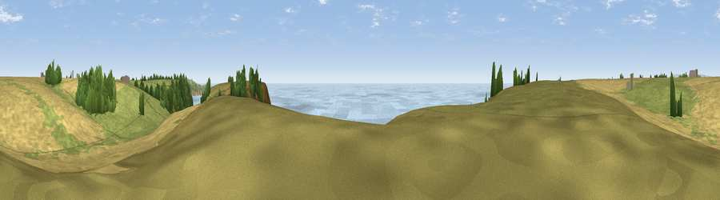

Viewpoint near Malborough
#1601 in England · top 4% of its area beats it · near MalboroughWhere it is
The exact computed spot (SX 71475 36775). Click the marker for map links.
The view, rendered

A 360° render of this exact spot computed from the terrain model, tree cover and land cover — summer colours, afternoon light, calibrated against photographs of famous viewpoints. Real trees, hedges and buildings will differ in detail.
The panorama
Grey silhouette: terrain skyline in each direction (720 bearings, Earth curvature and refraction included). Dashed green: skyline with trees (+15 m) and buildings (+8 m) as obstacles. Blue strip: how far the ground is visible on each bearing.
Where the view opens
Wedge length = distance to the farthest visible ground on that bearing (vegetation-aware). Rings at 10, 25 and 50 km.
What fills the view
54% water · 22% grassland · 21% cropland · 3% woodland
Angular shares of the visible panorama (visual magnitude), not map area. Landscape diversity 0.48 (0–1 Shannon).
Key numbers
More beautiful places nearby
The staircase of upgrades: each row has a higher view potential than everything closer. Driving times are estimates from straight-line distance, calibrated against real road routing — check an actual route before setting out.
| Place | Direction | Drive | Score |
|---|---|---|---|
| Viewpoint near Salcombe | ESE · 1 km | ~3 min | 80.5 |
| Viewpoint near Hope | WNW · 4 km | ~9 min | 84.4 |
| Viewpoint near East Prawle | E · 5 km | ~12 min | 84.6 |
| Pencarrow Head | WNW · 58 km | ~80 min | 86.0 |
| Viewpoint near Stenalees | WNW · 74 km | ~98 min | 88.0 |
| Viewpoint near Crackington Haven | NW · 82 km | ~106 min | 88.1 |
| Golden Cap | NE · 89 km | ~113 min | 88.7 |
| The Knoll | ENE · 96 km | ~121 min | 91.0 |
50.21699, -3.80283 · source: screening · position refined by local search. Computed location — check access rights before visiting.